class: middle left # make typographic choices --- class: middle <figure> <p>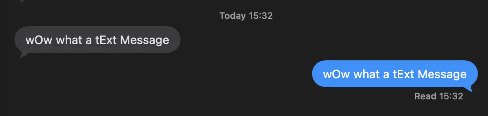</p> </figure> --- class: middle <figure> <p>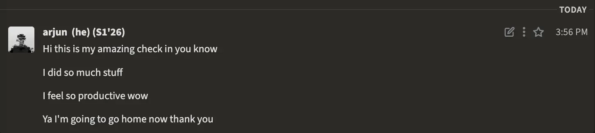</p> </figure> --- class: middle <figure> <p>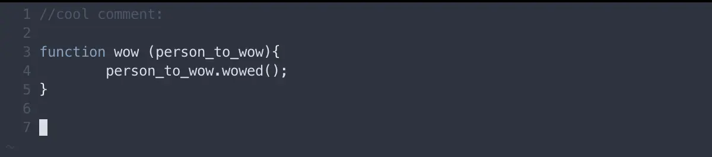</p> </figure> --- class: middle <figure> <p>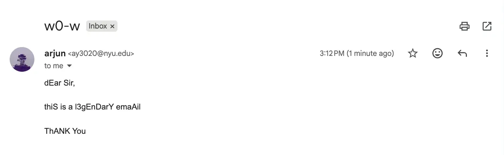</p> </figure> --- class: middle <figure> <p>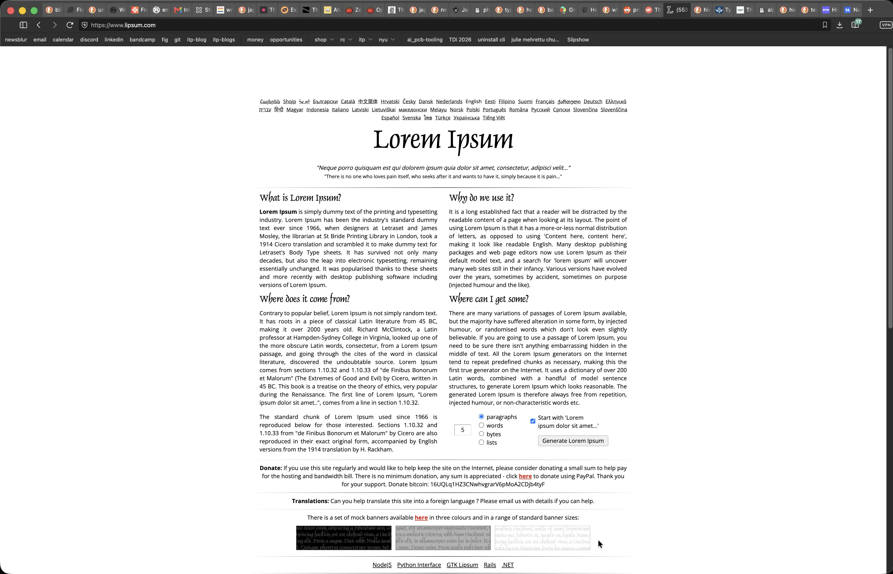</p> </figure> --- class: middle <figure> <p>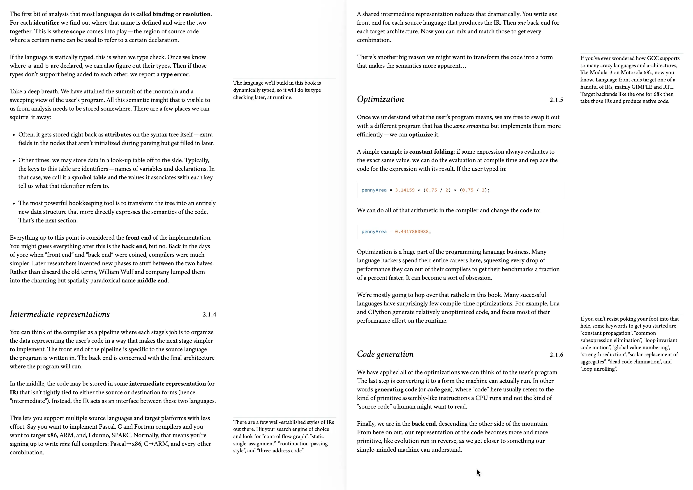</p> </figure> --- class: middle <figure> <img id = "white" src = "https://www.techtarget.com/rms/onlineimages/glyphs-f.png"> </figure> --- class: middle <figure> <p>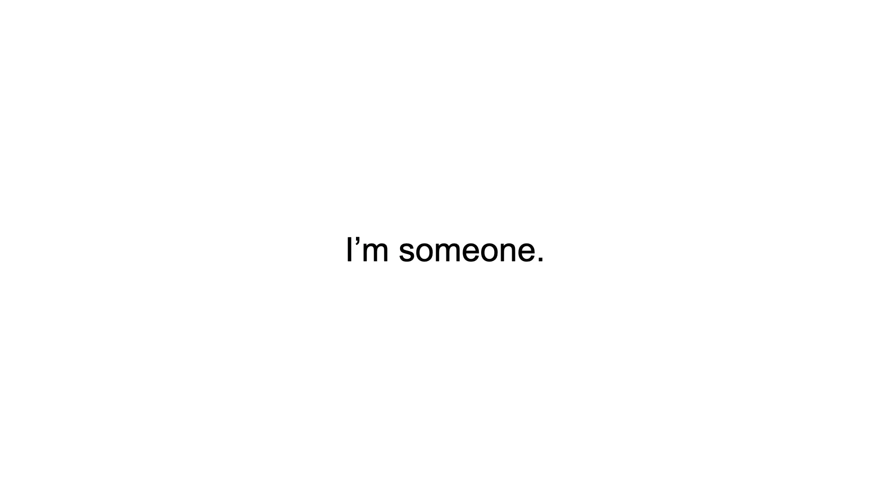</p> </figure> --- class: middle <figure> <p>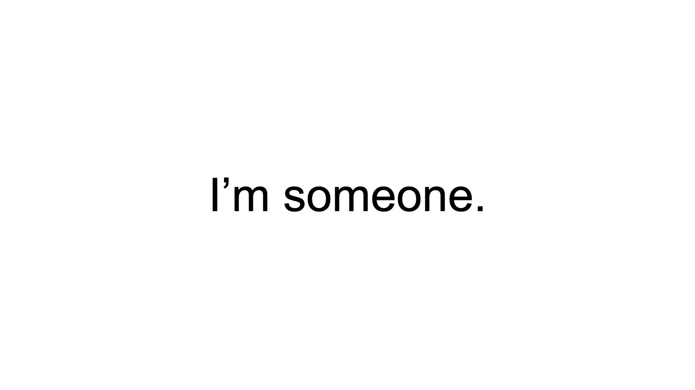</p> </figure> --- class: middle <figure> <p>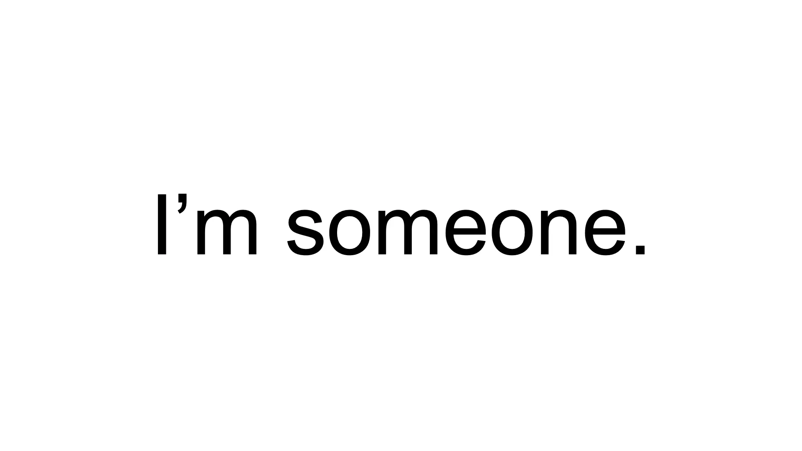</p> </figure> --- class: middle <figure> <p>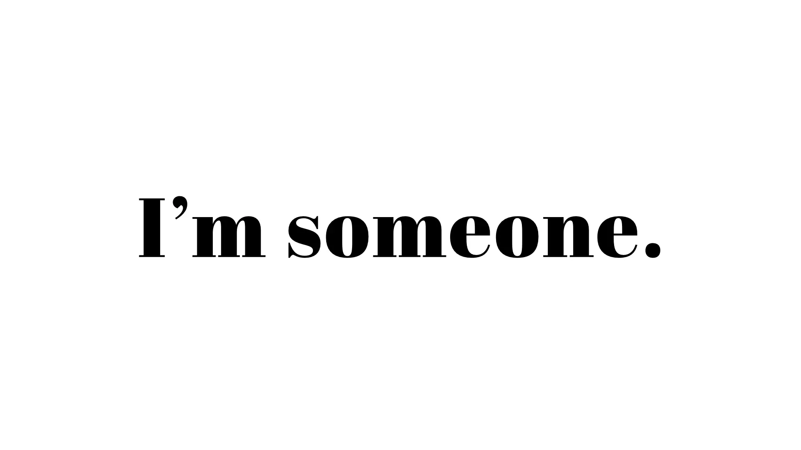</p> </figure> --- class: middle <figure> <p>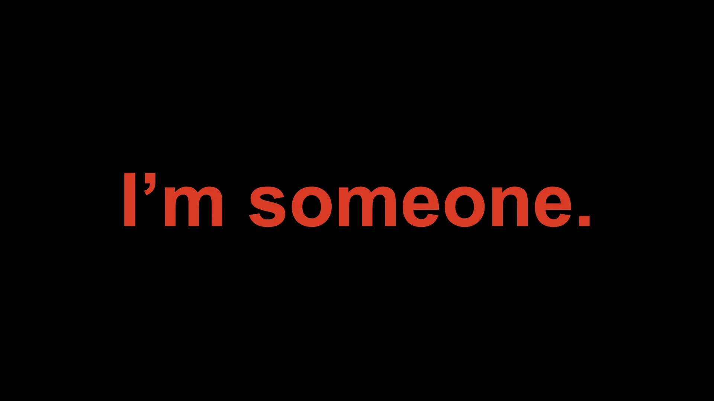</p> </figure> --- class: middle <figure> <p>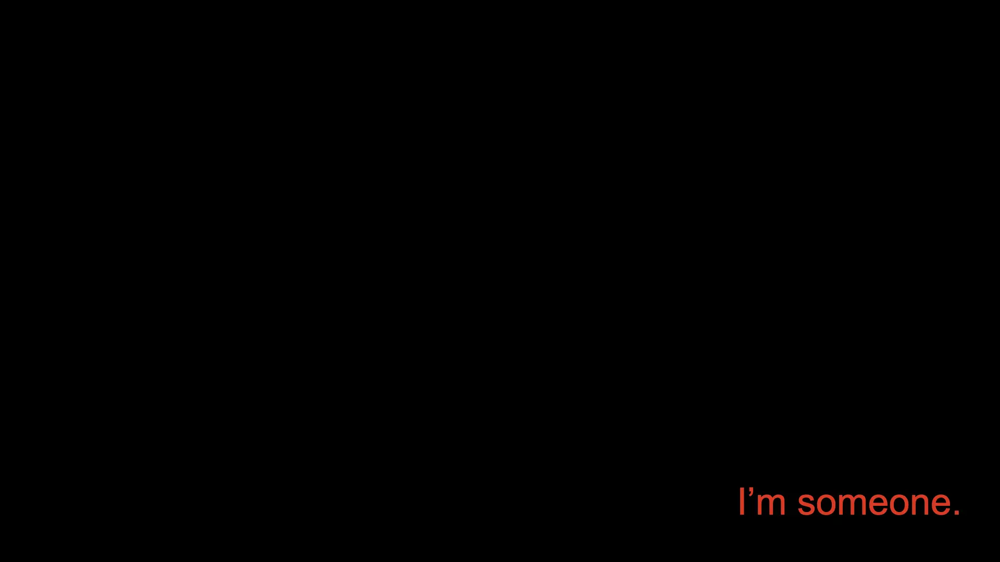</p> </figure> --- class: middle <figure> <p>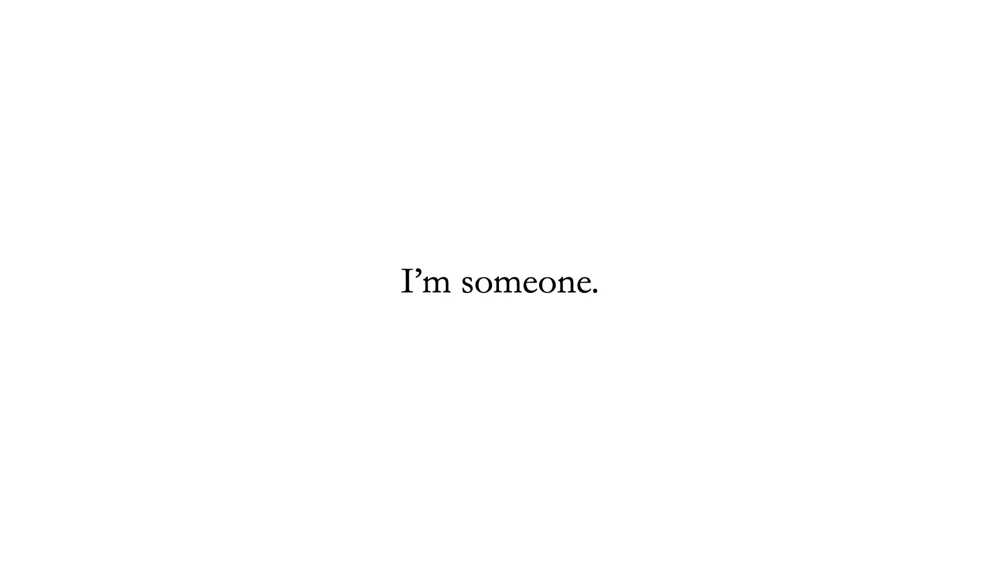</p> </figure> --- class: middle <figure> <p>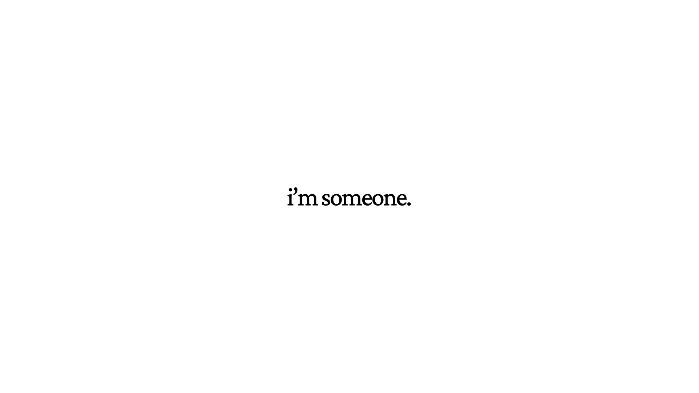</p> </figure> --- class: middle <figure> <p>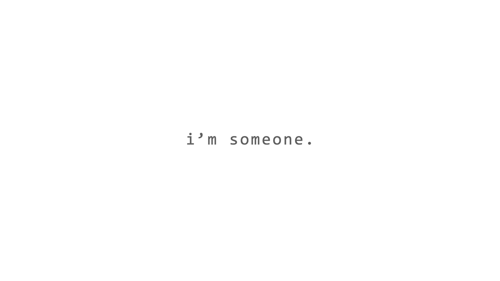</p> </figure> --- class: middle ## <mark>even people who are not typographically sensitive</mark> — such as the “casual consumers of onscreen information” — <mark>also attribute personality descriptors to typefaces</mark> (such as ‘courier-new’ feeling more cool, stiff, passive, as opposed to ‘poor richard’, which feels more active & exciting). <figcaption>Shaikh, Dawn, and Barbara Chaparro. “Perception of Fonts: Perceived Personality Traits and Appropriate Uses.” Digital Fonts and Reading, by Mary C Dyson and Ching Y Suen, WORLD SCIENTIFIC, 2016, pp. 226–47. DOI.org (Crossref), https://doi. org/10.1142/9789814759540_0013.</figcaption> --- class: middle ## aekyoung kim & sam j. maglio have shown that <mark>letter-casing directly shapes the perception of a messenger’s gender</mark>; with lowercase letters feeling more feminine than uppercase ones (and vice-versa). <figcaption>Kim, Aekyoung, and Sam J. Maglio. “Text Is Gendered: The Role of Letter Case.” Marketing Letters, vol.32, no. 2, June 2021, pp. 179–90. DOI.org (Crossref), https://doi.org/10.1007/ s11002-021-09556-w.</figcaption> --- class: middle ## typography speaks to your body at a lived level. <figcaption>the assimilation of text by image, by david (jhave) jhonston.</figcaption> --- class: middle ## / --- class: middle ## in my usage, the term 'graphic' (elements) includes all aspects of layout and composition by which elements are organized on a surface. <figcaption>from graphic devices: narration and navigation, by johanna drucker.</figcaption> --- class: middle <figure> <img src="https://external-content.duckduckgo.com/iu/?u=https%3A%2F%2Fwww.johannadrucker.net%2FhistEd1Ob1_hr_0016_00.jpg&f=1&nofb=1&ipt=f67d608b0472d1345c4197f469694d9c1b5a208f26961bc746956d612238151c"> <figcaption>by johanna drucker.</figcaption> </figure> --- class: middle ## graphic elements do more than simply structure narration — they affect the narrative itself in substantive ways. <figcaption>from graphic devices: narration and navigation, by johanna drucker.</figcaption> --- class: middle ## size -- ## color -- ## placement -- ## navigational elements -- ## space (between words) -- ## space (between lines) -- ## space (between everything) -- ## ... --- class: middle ## / --- class: middle ## on lowercase writing: --- class: middle <figure> <p>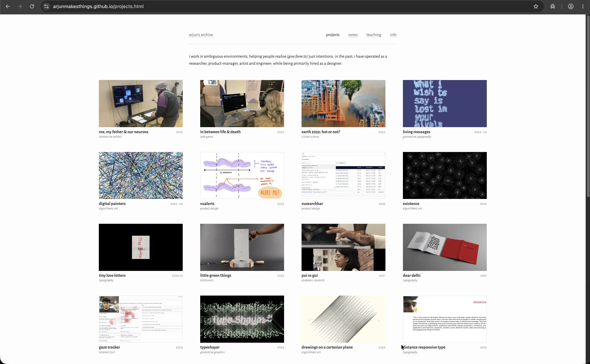</p> </figure> --- class: middle <figure> <p>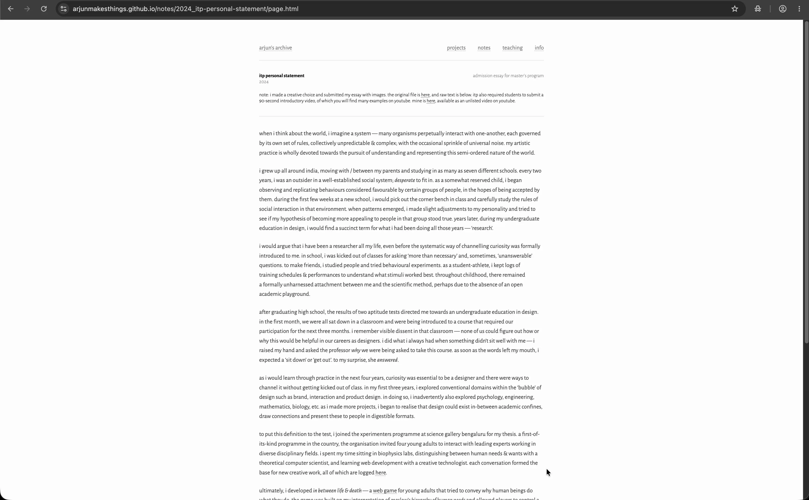</p> </figure> --- class: middle <figure> <p>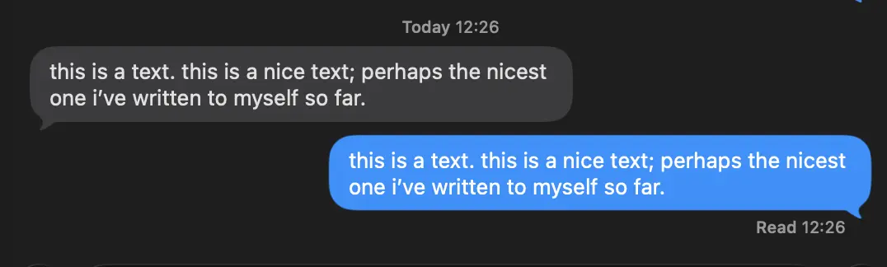</p> </figure> --- class: middle ## / --- class: middle ## why do you need 52 characters for 26 sounds? --- class: middle <figure> <img id="white" src="https://external-content.duckduckgo.com/iu/?u=https%3A%2F%2Fthebayercenter.org%2Fwp-content%2Fuploads%2F2024%2F02%2F2.-1938_BayerMoMA_ArtResource.jpeg&f=1&nofb=1&ipt=0211e6448f28b041c760d1a5e722967134ab9cc0d9ac26a309dd4618e7ecf0cc"> <figcaption>herbert bayer; from thebayercenter.org</figcaption> </figure> --- class: middle <figure> <img id="white" src="https://encyclopedia.design/wp-content/uploads/2018/10/Universal-Typeface-Herbert-Bayer.jpg?wsr"> <figcaption>univers, by herbert bayer.</figcaption> </figure> --- class: middle ## it is inconsistent in language usage to write differently than to speak. <mark>we don’t speak big sounds, that’s why we don't write them either.</mark> and: doesn’t one say the same thing with one alphabet as with two alphabets? <figcaption>herbert bayer; bauhaus journal 1.1926.</figcaption> --- class: middle ## why does one merge two alphabets of completely different characters into one word or sentence and thereby make the written image inharmonic? <figcaption>herbert bayer; bauhaus journal 1.1926.</figcaption> --- class: middle ## "it makes scanning easier." --- class: middle ## .grey.unbold[<strike>it makes scanning easier.</strike>] ## then strive to write better. --- class: middle ## / --- class: middle <figure> <div class = "two"> <p>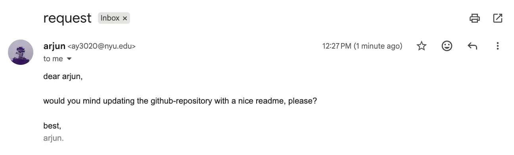</p> <p>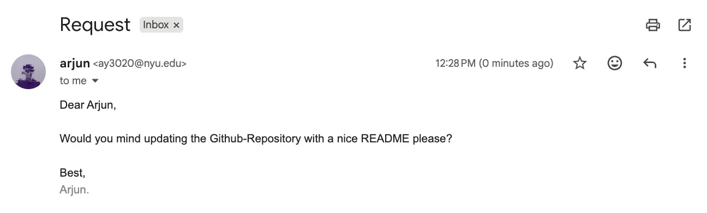</p> </div> </figure> --- class: middle ## / --- class: middle center <figure> <video preload="yes" muted playsinline autoplay nocontrols loop height = "500"> <source src="https://arjunmakesthings.github.io/projects/2023-24_living-messages/2023_give+take/Clip.mp4" type="video/mp4" /> your browser does not support videos. </video> <figcaption>from <a href = "https://arjunmakesthings.github.io/projects/2023-24_living-messages/page.html"><em>living messages</em></a>, 2023-2024.</figcaption> </figure> --- class: middle <figure> <video id = "white" preload="yes" muted playsinline autoplay nocontrols loop height = "500"> <source src="https://arjunmakesthings.github.io/projects/2023-24_living-messages/2023_the-distance-between-us/vid.mp4" type="video/mp4" /> your browser does not support videos. </video> <figcaption>from <a href = "https://arjunmakesthings.github.io/projects/2023-24_living-messages/page.html"><em>living messages</em></a>, 2023-2024.</figcaption> </figure> --- class: middle ## if you're doing anything with words, -- # please make typographic choices. -- ## not making a choice, -- ## is also, sadly, a choice (and it communicates <em>something</em> about you). --- class: middle ## :]